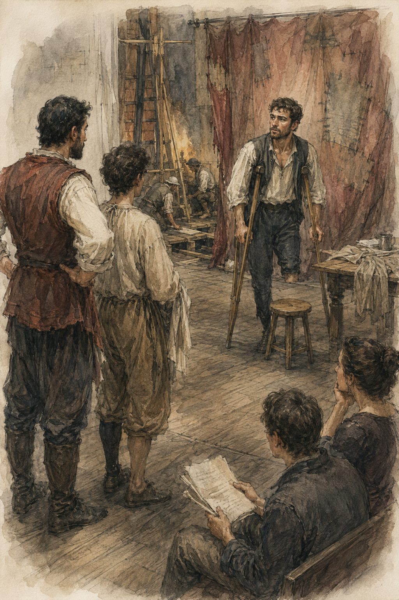
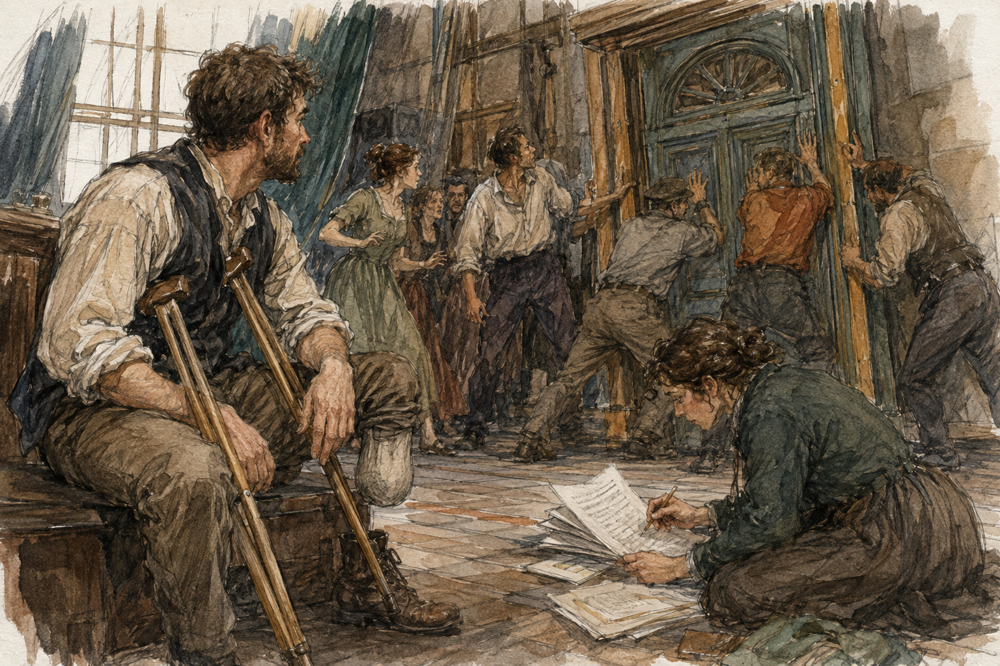

Teren was early.
This offended me more than it should have.
He was in his chair when I came through the open side door, pages spread across his knees, eating something wrapped in paper with one hand while marking the script with the other.
He looked up.
“You.”
“Gregory.”
“I know.”
“You asked yesterday.”
“Yesterday I was late.”
“Today you are not.”
“I improve.”
“That remains unproven.”
He stared at me for half a second, then laughed through his food.
The theatre smelled less like vinegar today.
More like wet wood and dust.
The wall I had wondered about was still standing. The replaced boards were darker than the old ones, and someone had painted one section badly enough that the difference was more obvious, not less.
Good.
One question answered.
The servant actor was onstage with a cup.
Second question available.
The cup did not fall.
Disappointing.
The unnamed woman who had first made me read during the fire stood in the aisle with both hands on her hips while two workers argued over a painted doorway.
“It leans.”
“It has always leaned.”
“It leans more.”
“It survived a fire.”
“So did I. I still stand straight.”
One worker looked at her.
She reconsidered.
“Mostly.”
They moved the doorway six inches.
She saw me.
No surprise.
No greeting either.
“Ramp's clear.”
“I didn't ask.”
“You were looking at the steps.”
I had been.
Three unrailed steps.
Still three.
Still not mine.
I went around.
The scenery ramp had two flats stacked along one edge today, leaving enough width for me if I placed the crutches carefully. I waited while a worker came down carrying a box of lamp fittings. He did not slow. I moved to the side as much as the ramp allowed.
“Thanks.”
Then up.
No revelation.
At stage level, the servant actor was arguing with the cup.
Not literally.
Probably.
“No,” the woman said. “Again.”
He reset near the painted doorway.
Another actor stood opposite him, playing the merchant from the fire night.
The servant entered.
The merchant said something about accounts.
The servant crossed behind the table, set the cup down, answered, picked up a ledger, and moved toward the doorway.
“Stop.”
They stopped.
“You knew he was going to accuse you before he accused you.”
“I've heard the line seventeen times.”
“Then forget it.”
“Excellent. Teren?”
Teren raised his pages.
“I can help with forgetting.”
“No one asked you.”
“Again.”
They reset.
I moved toward the wing.
“Not there,” someone said behind me.
I moved the other direction.
“Also not there.”
I stopped.
The worker carrying a coil of rope pointed with his chin.
“Chair.”
There was a chair against the wall.
I sat.
Apparently furniture remained my strongest qualification.
From the chair I could see more of the repair work than I had from the audience.
One section of floor near the wing had been lifted completely. Two workers crouched over the opening, passing blackened pieces of wood up one at a time. A third wrote something on a scrap of board with chalk.
Not investigation.
Counting.
Probably cost.
A pile beside them had three categories I could infer only because one worker kept shouting them.
“Keep.”
“Cut.”
“Burn.”
A scorched brace went to CUT.
A warped strip went to BURN.
A hinge, after an argument, went to KEEP.
“Why keep that?” I asked the nearest worker.
He looked at me like I had interrupted a funeral.
“Because hinges cost money.”
“It is black.”
“So are you when you're dirty.”
Fair.
He went back to work.
At the far side of the stage, someone was stitching a long dark patch into the damaged curtain. The patch did not match. It was not even close.
I liked it more than I should have.
Nothing here had waited to become elegant before becoming usable again.
Careful.
That sounded like a lesson.
It was a curtain.
The scene ran again.
This time the servant did not anticipate the accusation.
Or looked less like he did.
I could not tell what had changed.
His route was nearly identical.
Cup.
Ledger.
Doorway.
But when the merchant accused him, the servant's head turned a fraction later.
Maybe.
Do not build table.
I watched.
They ran it again.
Different interruption.
A stagehand crossed behind them carrying a painted section of fence.
Nobody stopped him.
The servant had to wait half a beat before reaching the doorway.
The scene felt different.
That was not useful enough to write down.
Excellent.
After the fourth run, the woman called for someone I did not know.
No answer.
She called again.
A voice from somewhere backstage shouted, “Roof!”
“What does that mean?” I asked Teren.
“He's on the roof.”
“Why?”
“Roof.”
That was apparently sufficient.
The woman looked around.
Her eyes landed on me.
“No.”
“I didn't say anything.”
“You were about to.”
“I was not.”
“Good. Come here.”
I looked at Teren.
He kept eating.
“Why?”
“Because you are approximately a person.”
“That is a low threshold.”
“Today.”
I stood.
The servant actor looked delighted.
“Fire boy.”
“Gregory.”
“Gregory Fire Boy.”
“No.”
The woman pointed to a mark on the stage.
“Stand there.”
I looked at the mark.
Then at my crutches.
Then at the route between us.
A stool, one loose length of cloth, and the corner of the table occupied most of it.
She followed my eyes.
“Move the stool.”
The servant moved it.
“Cloth.”
Someone kicked it clear.
I crossed to the mark.
Not quickly.

Nobody waited politely. They waited because rehearsal could not continue until I got there, which felt different.
I planted both crutches.
“What am I doing?”
“Standing there.”
“I have extensive experience.”
“Good. You're the magistrate.”
“No.”
“You are standing where the magistrate stands.”
“That is different.”
“Yes.”
Better.
She handed me two pages.
I looked at them.
There were more words than I wanted.
“I thought I was standing.”
“You can read while standing?”
“Yes.”
“Miraculous.”
“No magic today.”
Silence.
I regretted it immediately.
The servant actor blinked.
Teren lowered his food.
The woman said, “I don't know what that means.”
“Good.”
“Read the marked lines.”
There were three.
Not long.
First: “You presume much for a servant.”
Second: “And what exactly do you believe you saw?”
Third: “Get out.”
I read them silently.
“Out loud,” she said.
“I was checking them.”
“They haven't changed.”
“You don't know that.”
Teren made a noise behind us.
I ignored him.
The woman pointed at the merchant.
“He starts. You answer when it is your line. Do not do anything clever.”
“I was not planning to.”
“Excellent. Begin.”
The merchant started.
I watched the page.
His line ended.
I read mine.
“You presume much for a servant.”
“Stop.”
Already.
“What?”
“You're talking to the paper.”
“The words are on it.”
“The servant isn't.”
I looked at the servant.
He waved.
“Again.”
Reset.
Merchant spoke.
I looked up sooner.
“You presume much for a servant.”
The servant answered.
I looked down to find the next place.
Missed something.
Teren supplied two words from his chair.
I found it.
“And what exactly do you believe you saw?”
“Too late,” the woman said.
“I lost the line.”
“I know.”
“That is why it was late.”
“I know.”
“You said too late like it was a separate problem.”
“It is when everyone else has to stand here waiting for you.”
Fair.
Again.
This time I tried to memorize all three lines before we started.
That was clever.
She had specifically said not to do anything clever.
I should have listened.
The first line came out too fast because I was ready for it.
“Stop.”
“I know.”
“Do you?”
“I was early.”
“You were waiting to speak while he was still speaking.”
“I did not interrupt.”
“Your face did.”
“My face did not speak.”
The servant actor covered his mouth.
The woman stared at me.
Then at him.
“Do not encourage him.”
“I didn't.”
“Your face did.”
That was unfair.
Probably.
Again.
I stopped trying to hold all three lines in my head.
Merchant.
Look up.
Listen.
Not method.
Just this time.
His accusation arrived.
I answered.
“You presume much for a servant.”
The servant looked at me differently.
Not because I was good.
Because he changed something.
His shoulders dropped.
“Presumption is the cheapest thing I own.”
I nearly looked at the woman.
Did not.
The scene continued.
I found the second line before I needed it.
Looked up.
“And what exactly do you believe you saw?”
The servant held my eyes.
A pause.
Too long?
No.
Maybe.
“I saw your wife leave by the kitchen door wearing your coat.”
The merchant made a sound.
Not in my pages.
The servant turned toward him.
Something passed between them that I did not understand.
Then back to me.
I had the third line.
“Get out.”
The servant smiled.
Not character?
Character?
No idea.
“Good,” the woman said.
My stomach moved.
Then she added, “Again.”
Of course.
The next run was worse.
Much worse.
I tried to reproduce the previous one.
That killed it.
I knew it killed it because even I could feel the deadness before she stopped us.
“What did you do?” she asked.
“The same thing.”
“No.”
“I attempted to.”
“Why?”
“Because you said good.”
She looked genuinely confused.
Then she laughed once.
“That was about that one.”
“What does that mean?”
“It means I liked what happened.”
“What happened?”
“If I could tell you exactly, I would tell you exactly.”
“You are directing it.”
“Yes.”
“That seems like a professional weakness.”
The merchant actor barked a laugh.
The woman pointed at him without looking away from me.
“You want his job?”
“No.”
“Then stop helping.”
He stopped.
I considered the problem.
Wrong.
I considered the scene.
Also wrong.
I considered shutting up.
Promising.
“What does that mean?”
“It means it was good.”
“And therefore not reusable?”
“I did not say that.”
“Then what?”
She rubbed both hands over her face.
The servant actor leaned toward me.
“You're going to kill her.”
“I am asking a reasonable question.”
“No,” the woman said through her hands. “You're asking three reasonable questions at the same time.”
I shut up.
“Again. Don't copy yourself.”
“That instruction is impossible.”
“Try badly.”
We did.
I did try badly.
Meaning I stopped trying to reconstruct the successful run.
The result was not as good.
Apparently.
Nobody said good.
But nobody stopped us either.
We reached the end.
“Again.”
By the sixth time, my right palm was getting warm from standing with the crutches.
Not injury.
Load.
I shifted.
The woman noticed.
“Sit.”
“I can continue.”
“I didn't ask.”
“I am not injured.”
“I didn't say you were. I need him.”
She pointed at the servant.
Oh.
The missing actor had apparently returned from the roof.
He came across the stage carrying a hammer.
“Done.”
“Good. Gregory, you're fired.”
“I was not employed.”
“Then you're impossible to fire. Sit down.”
I moved back toward the chair.
The servant actor called after me.
“You were a terrible magistrate.”
“I was not the magistrate.”
“You stood where he stands.”
“Different.”
“Very.”
I sat.
My palm cooled.
The actual actor took the mark.
Before they began, he looked at me.
“Where were you standing?”
I pointed at the mark beneath him.
“I gathered that.”
“Then why ask?”
“What did he do with the cup?”
“The servant?”
“Yes.”
“Set it down. Picked up ledger. Later moved it.”
“Which side?”
I pointed.
He nodded.
That was all.
No thanks.
No explanation.
He turned away and started.
I had been useful for approximately four seconds.
This was becoming a very strange place to enjoy.
They ran the scene.
He was better than me.
Annoyingly better.
Not because his voice was louder.
Not because he moved more.
He barely looked at the page because he did not have one.
That helped.
Obviously.
He also seemed to know when the servant was about to do something without looking like he knew.
That sentence was useless.
I kept it out of the notebook I did not have open.
Teren leaned toward me.
“You're frowning.”
“He's better.”
“Yes.”
“Why?”
Teren looked at the stage.
“Which time?”
I turned to him.
“That is not an answer.”
“It is today.”
Everyone here was diseased.
The scene continued.
The servant did something with the cup.
Not dropped.
Moved it to the wrong side of the table.
The magistrate noticed.
Changed where he stood.
The merchant had to go around him.
The whole shape changed.
Nobody stopped.
At the end the woman said, “Again, and put the cup where it belongs.”
So it had been wrong.
But they had continued.
I wanted to ask why.
I did not.
Then I wanted credit for not asking.
That ruined it.

The repaired doorway shifted during the next run.
One worker swore.
The merchant stayed in character for another line before the woman shouted, “Stop, stop, the house is actually falling now.”
The servant looked at the doorway.
“Again?”
“Not until architecture agrees.”
Teren marked his page.
“What are you writing?” I asked.
“Door.”
“That is not useful.”
“It will be when I forget why we stopped here.”
“You expect to forget?”
“I expect six other things to happen before we restart.”
As if summoned by the sentence, someone called his name from backstage.
Teren shouted, “No.”
The voice shouted something I could not hear.
Teren sighed, put the pages down, and left.
The chair was empty.
I looked at it.
Then away.
No one asked me to sit there.
Good.
I did not.
Also good.
Nobody noticed.
Best of all.
Perfect.
One worker swore.
Rehearsal stopped for ten minutes while they braced it.
Nobody discussed my three lines.
Nobody told me I had potential.
Nobody asked me to do them again.
The servant actor went to help hold the doorway.
Teren reorganized pages.
The woman argued about nails.
I sat in the chair and watched the theatre stop being about me with impressive efficiency.
Good.
After the doorway was stable, rehearsal resumed with the actual magistrate.
I stayed.
No one asked whether I was staying.
Near the end of the afternoon, Teren stood and stretched.
“You coming tomorrow?”
“I don't know.”
“Good.”
I looked at him.
“Did she tell you to say that?”
“Who?”
I pointed.
The woman was across the stage arguing with someone about the curtain.
“No.”
“Why did you say it?”
“Because I don't care.”
“That is reassuring.”
“Happy to help.”
I left by the scenery ramp.
My palms were warm again by the time I reached the street.
Right calf mildly tired.
Residual limb quiet.
No thumb.
No magic.
Tomorrow was a living day.
The morning after that belonged to Hessa.
Theatre did not belong to anyone in my schedule.
Apparently that was why I kept going.
I had stood in a scene today.
Three lines.
Six attempts.
One had been good.
Maybe.
I did not know what that meant.
Good.
I hated that.
Also good.